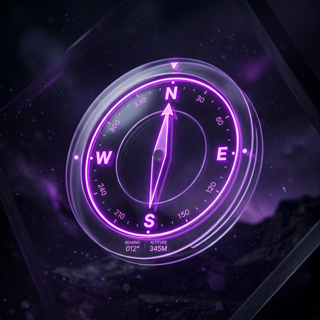

Place, discover, and share digital artifacts in augmented reality. Transform your city into a living canvas of memories and art.
A parallel digital universe woven into the physical world, accessible to those who know how to look.
Anchor digital artifacts to physical locations. Whether it's a floating 3D sculpture, a spatial audio memory, or a glowing neon text sign, your creations persist in the real world.
Use the Map to find nearby scenes or let the Spatial Compass guide you directly to hidden artifacts. The world is full of secrets waiting to be uncovered.

Share experiences exactly where they happened. Leave private messages for specific friends or public art for the entire community to enjoy.
Place digital art, 3D models, or "graffiti" in physical locations for the public to find and admire.
Discover hidden historical facts, vibrant audio guides, and location-anchored community memories.
Leave private, location-anchored memories for each other, like a shared audio message at a favorite cafe.
Your data is yours. ARt_ifact is built from the ground up to respect Apple's strict privacy guidelines.
We use smart geo-fencing to only activate high-power AR and location services when you are actively discovering or creating content.
You have full control. Share privately with specific friends, keep them personal, or publish them publicly for the world.
ARt_ifact requires iOS 26.0+ and runs best on iPhone devices equipped with LiDAR for precise mesh reconstruction.